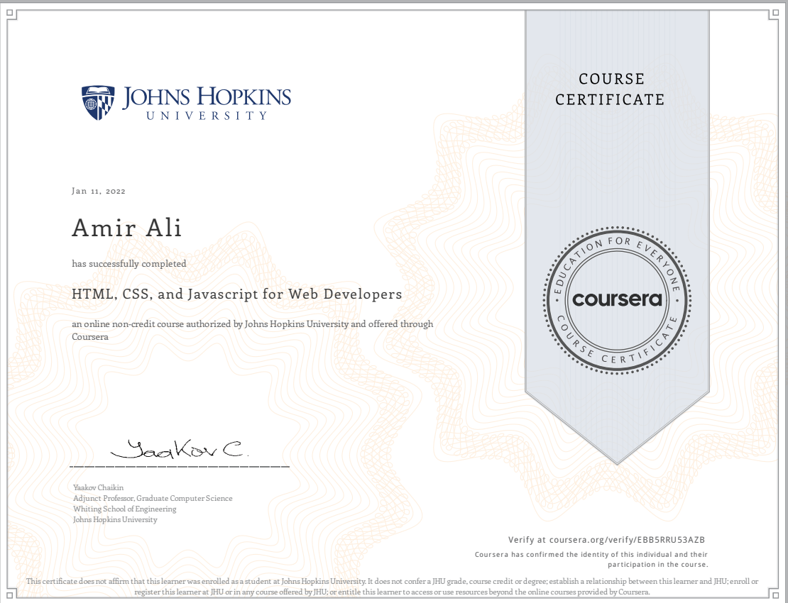
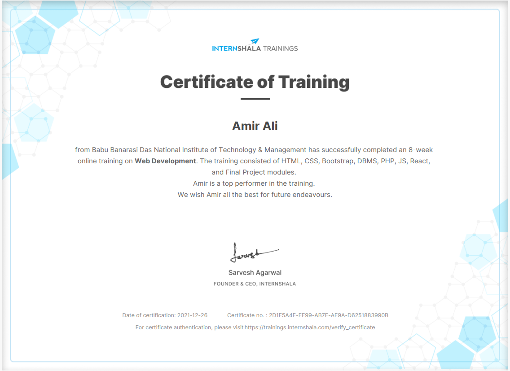
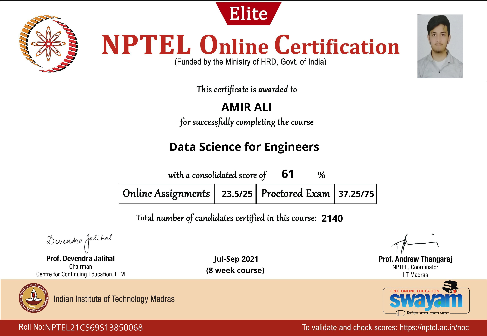
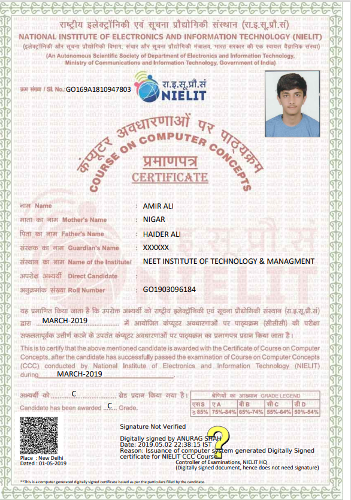
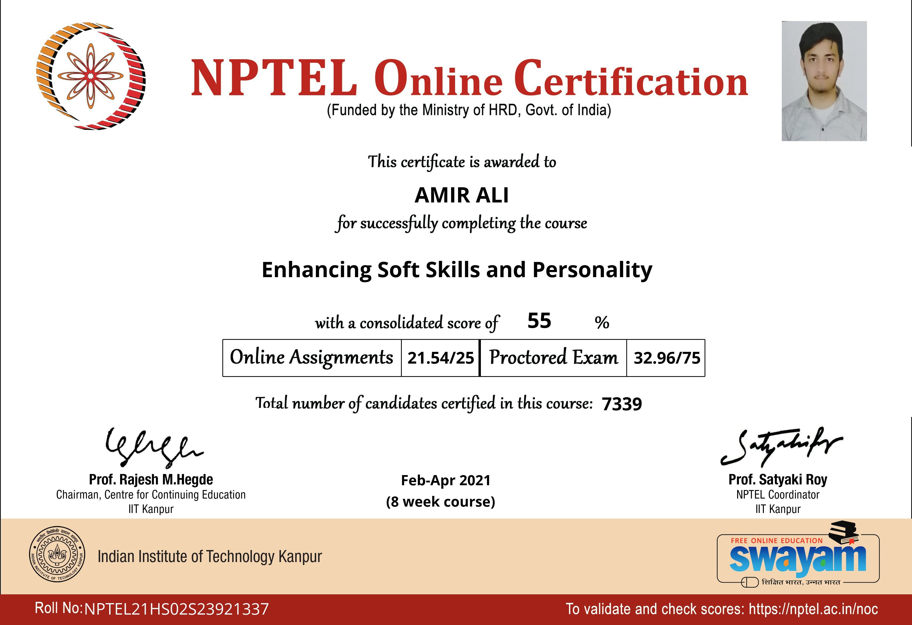

There is only one thing that makes a dream impossible to achieve: the fear of failure.
Here are some of my achievements...
Web Developer - Coursera
As a web developer, the three main languages we use to build websites are HTML, CSS, and JavaScript.
JavaScript is the programming language, we use HTML to structure the site, and we use CSS to
design and layout the web page. These days, CSS has become more than just a design language, though.
This course is offered by Johns Hopkins University.
Click Here to view Coursera Certificate

Full Stack Developer - Internshala
Full stack technology refers to the entire depth of a computer system application, and full stack developers straddle two separate web development domains: the front end and the back end.
The front end includes everything that a client, or site viewer, can see and interact with.
This course is offered by Internshala Trainings.
Click Here to view Internshala Certificate

Data Science for Engineers - NPTEL
Data science is an interdisciplinary field that uses scientific methods, processes, algorithms and systems to extract knowledge and insights from noisy, structured and unstructured data, and apply knowledge and actionable insights from data across a broad range of application domains.
This course is offered by NPTEL.
Click Here to view Data Science Certificate

Course on Computer Concepts - NIELET
Course on Computer Concepts (CCC) certificate is a computer literacy program and was recommended by the National Task Force on Information Technology and Software Development.
CCC is a course designed to impart basic IT literacy program to the common man.
This course is offered by National Institute of Electronics & Information Technology (NIELIT).
Click Here to view CCC Certificate

Enhancing Soft Skill and Personality - NPTEL
Enhancing Soft Skills and Personality The course aims to cause an enhanced awareness about the significance of soft skills in professional and inter-personal communications and facilitate an all-round development of personality.
Hard or technical skills help securing a basic position in one's life and career.
This course is offered by NPTEL.
Click Here to view Enhancing Soft Skill and Personality Certificate

That's all for now I will add more achievements here...